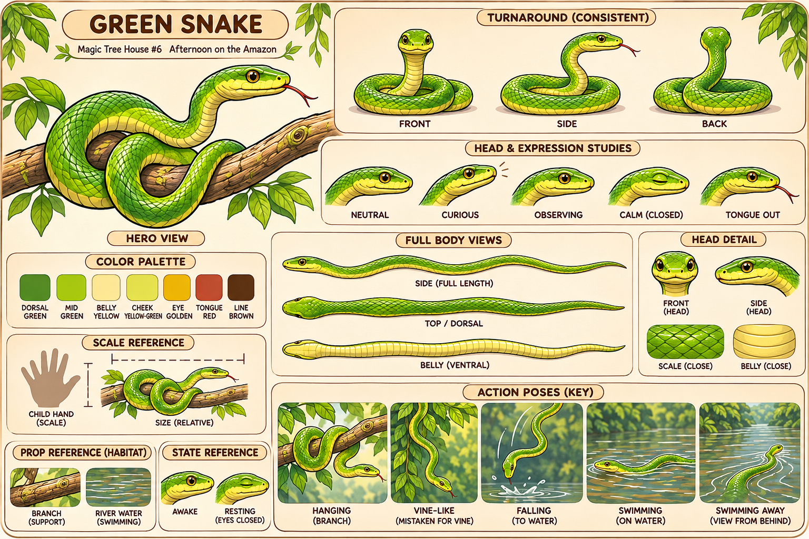
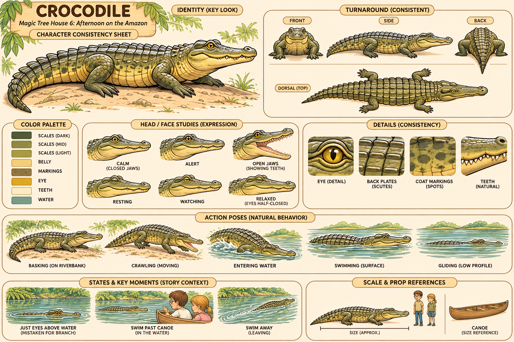
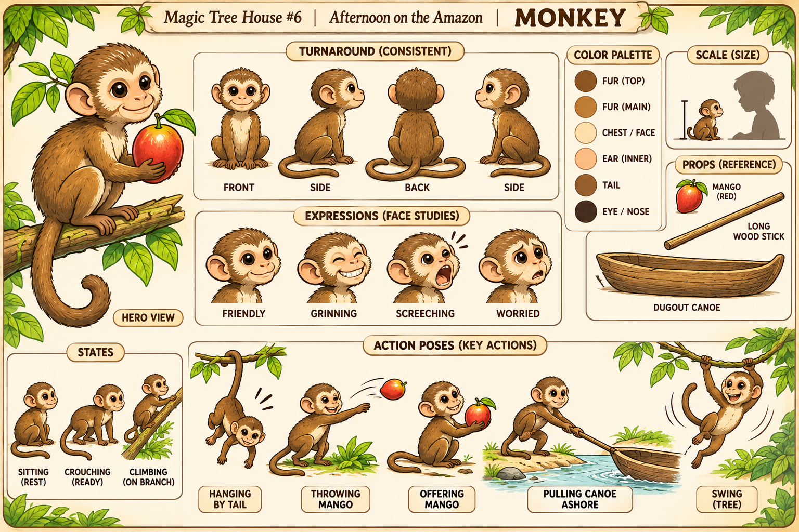

생성 전 이 계획과 실제 시트를 확인한다. 116–131, 132–147, 148–151의 세 배치. Jack·Annie·Peanut 얼굴과 의상은 앞 장과 고정한다. 강 위 통나무 카누에는 노·돛·모터가 없다. 116–124는 물에 손을 담그고 책·노트, 125–130은 이빨 물고기와 패닉, 131–140은 덩굴과 실제 초록 뱀, 143–148은 가지처럼 보이는 악어, 149–151은 꼬리로 매달린 작은 갈색 원숭이. 수중 생물은 해당 장면에서만 보이고, 과장된 공격은 만들지 않는다.




